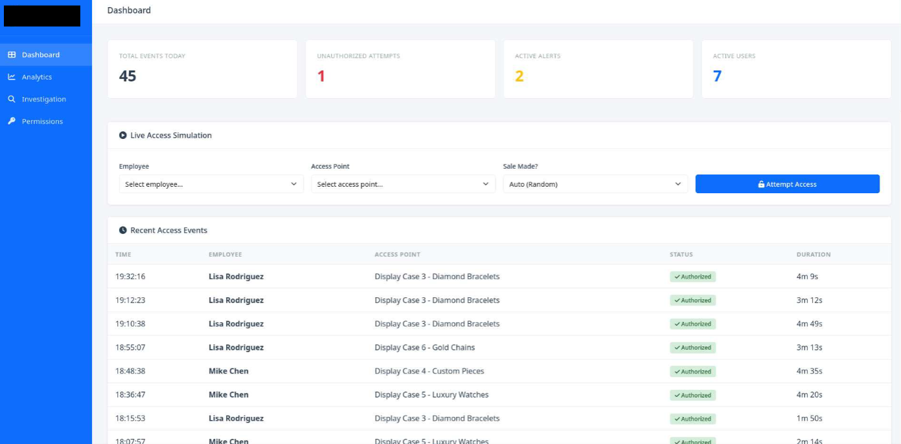
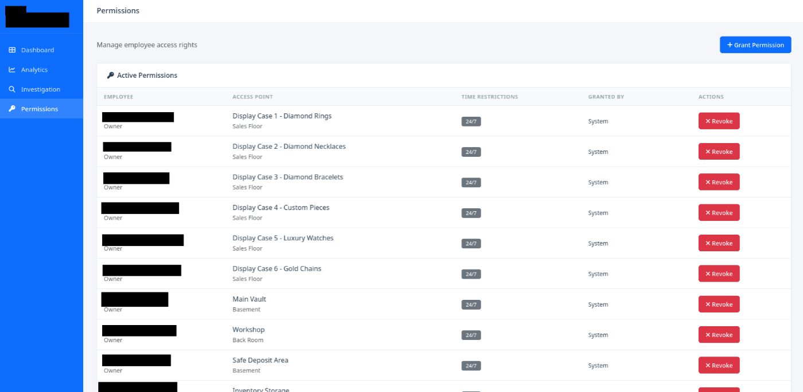
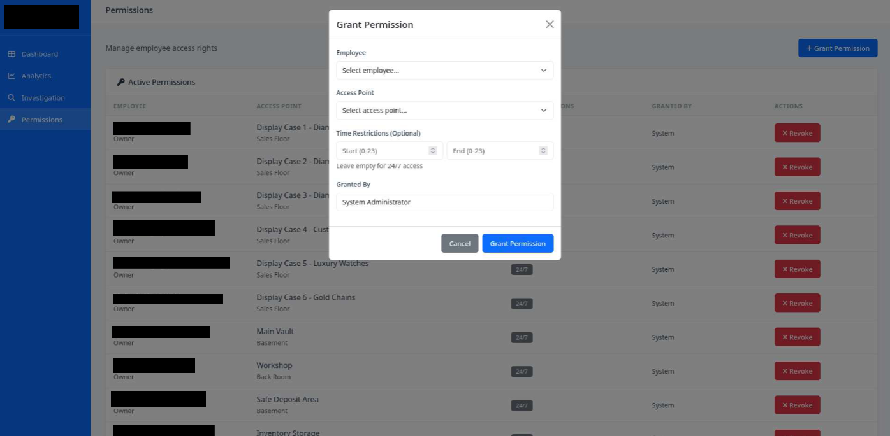
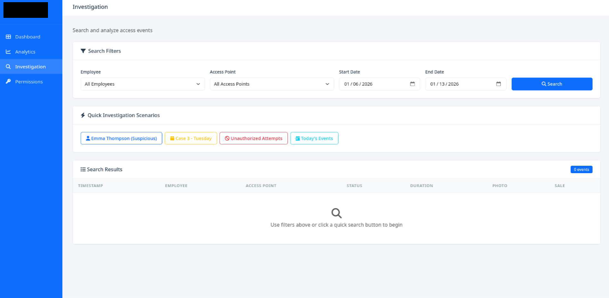
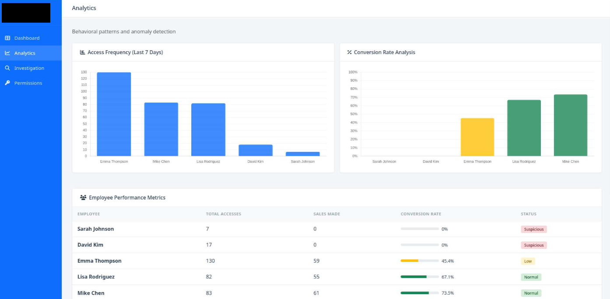

Overview
I designed and built a working prototype of a role-based access control (RBAC) system with tamper-evident audit logging for environments holding high-value inventory. The problem I set out to solve is a familiar one in luxury retail: staff need fast access to merchandise, but when something goes missing, reconstructing who touched what from manual logs can take hours — and everyone knows the logs are inconsistent, so they don't deter much.
My approach was to make every access event answer five questions automatically — who, what, when, where, and why — write them to a log that can't be quietly edited after the fact, and put a query interface on top so an investigation that used to take an afternoon takes seconds.
What It's Built To Do
An access query returns in under a second what used to mean hours of manual log review.
All access runs through the system, so by construction nothing happens off the record.
Append-only hash chaining makes any after-the-fact edit detectable.
These describe how the prototype is designed to behave — not a measured production benchmark.
How I Built It
Access control & enforcement
A default-deny RBAC model: users get roles (Sales, Manager, Security, Admin), roles map to granular permissions over inventory categories and locations, and a real-time decision engine evaluates user + role + resource + time on every request. Off-hours and emergency access require an explicit, logged justification rather than a silent override.
Immutable audit log
Each entry is append-only and carries a hash of the entry before it, so any attempt to rewrite history breaks the chain and shows up immediately on verification. Logs are encrypted at rest, and events stream to the analysis engine as they happen.
Behavioral anomaly detection
I baselined normal access patterns per user and role, then flagged deviations — off-hours activity, unusual categories, bulk access — with a weighted risk score so the security team's attention lands on the few events that actually warrant it.
Investigation interface
Plain-language queries ("who accessed item X in the last 30 days?"), a timeline view that reconstructs access sequences, and one-click audit exports for insurers or regulators.
The Interface
I built a working prototype to prove the workflow end to end. A few of the screens:
Dashboard

At-a-glance security posture — events today, unauthorized attempts, active alerts and sessions — with a live access feed and a simulation mode for validating permission changes before they go live.
Permissions

Per-employee permissions mapped to specific locations and inventory categories, with time restrictions, an accountability trail for who granted what, and one-click revocation. This view is where over-permissioned accounts — a classic insider-threat signal — become obvious.
Granting access

Structured dropdowns prevent typos and duplicates, optional start/end hours enforce least-privilege, and every grant is logged automatically. Time-bounded access is what keeps a late-shift employee from quietly reaching high-value stock outside their hours.
Investigation

Filter by employee, access point, and date range, or use the pre-built scenario buttons for common queries. The point of this screen is speed: "did employee X touch item Y before it went missing?" answered in under a second instead of an afternoon of log review.
Behavioral analytics

Access volume and access-to-sale conversion per employee, surfaced together. The pattern that matters jumps out — high access volume with low conversion, or access with no sales at all — which lets the team look into someone before inventory disappears, not after.
Stack
What I Took From It
The technical core is the hash-chained log, but the lesson that stuck was about communication: framing the system as "investigation time, from hours to seconds" landed with stakeholders far better than talking about cryptographic integrity. The same architecture maps cleanly onto law firms (file-access walls), healthcare (HIPAA access trails), and finance (MNPI controls) — any place that needs to prove who reached what, and when.
Evidence & availability
This is a prototype built on synthetic data — there are no real client details to protect, so a live walkthrough of the working build is available on request.